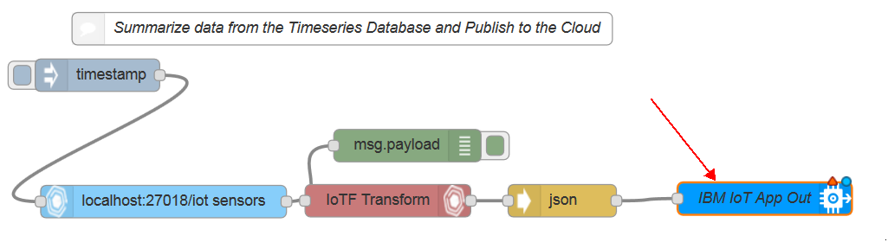

When you start the node-red service on your device using the IoT Gateway Kit and open node-red you will notice there are some empty comment nodes under the "BLE - Publish to Cloud" tab and the "BLE - Subscribe to Cloud" tab. These indicate where you will place your ibmiotapp nodes as well as whether it should be the out or the in. The ibmiotapp node will be found in the GatewayKit section of the nodes in the left pane.

Now we will drag out our ibmiotapp out node and connect it to our flow
Now we will go over how to properly fill out the app node.

-
First we will choose our authentication type, for this example we will use the API Key.
-
Next we will configure our API Key by clicking on the pencil next to the drop down box. That will pop up a new window that asks for Name, API Key, and API Token. the name will be displayed in the drop down box on the previous page once we create a configuration node, this will allow us to put more ibmiotapp nodes onto our flow and not have to fill out the API Key and Token every time. The API Key and Token will be the values that I asked you to save when we set up the Internet of Things Foundation. If you're unsure what I mean, please refer back to the this page. Once you finish copying the Key and Token you saved earlier select "Add"
-
Next we will select an output type, for this example we are receieving data so we will choose the device event output type.
-
The next two: Device Type and Device Id you will have created when you added a device to the IoT Foundation. If you have not yet done that, please refer to this page. You can view this information by viewing your Internet of Things Foundation dashboard if you have forgotten.
-
Event type is simply a description of the event that will be sent to this node. For this example I will just put "sensortag" since that is the type of device we are using, but feel free to use whatever you feel best describes the event you're reading in.
-
Format refers to the format of the data going into the Internet of Things Foundation. Using the IoT Gateway Kit we are using the json format, so fill this field out as json.
-
The data field just describes the type of data we will be sending. For this example I will just use the generic "data points" description, but feel free to make yours something more descriptive.
-
Finally, the name gives us an opportunity to provide a unique name to this node. This could be helpful if we had multiple ibmiotapp out nodes to differentiate from.
The ibmiotapp in node is very similiar to the out node. You will go ahead and select the API Key you have already created in the drop down for API Key. Input Type will be Device Event again. Device type and Device Id allows you to specify which devices you would like to pull down information from. Remember more than one device can be in a type, but Id's are unique. You can pull down all or some event types and all or some formats. This node is not as much about setup as the previous one, but as you can see allows many different options for the type of information you would like to pull out of the Internet of Things Foundation.